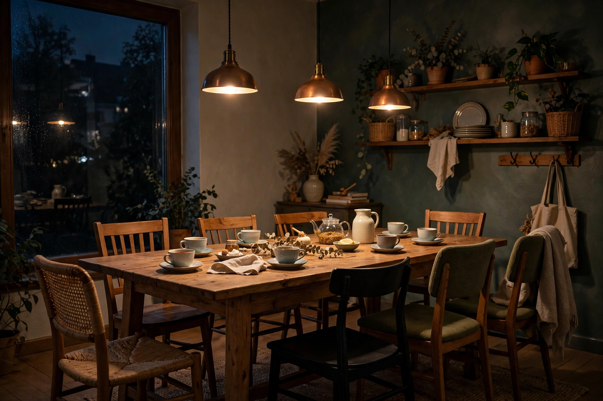

この記事の要点
- 家族や同居人の生活音は「一つの音」ではなく、話し声・物音・水音などが重なったものです。
- 同じ家では、生活の時間帯が違うと、物音が気になりやすくなります。相手が悪いわけではなく、暮らしのリズムの違いであることが多いです。
- 気になる音の帯域に近い音を控えめに流すマスキングで、物音を目立たなくできる場合があります（帯域は目安、個人差・環境差あり）。
- マスキングで足りないときは、我慢を続ける前に、記録を付けて落ち着いて話し合うのが次の一手です。
⏱ 急いでいる人へ ― 今夜やること3つ
📖 目次
📊 Hzの目安
家族の物音やシェアハウスの生活音は、一つの音ではありません。足音は40～1000Hz程度の中低音域、話し声は中～高音域、食器や水の音はさらに高音域まで広がります。どの音が一番気になるかによって、合わせる帯域も変わります。まずは、一番気になる音から考えてみてください。
20Hz80～4000Hz5000Hz
このページで紹介する8時間のマスキング音は、家族の生活音全体を想定したピンクノイズ（80～4000Hz）です。ただし、これはあくまで目安の帯域で、家の構造や部屋の位置関係によって聞こえ方は変わります。
🔊 家族の生活音の正体 ― 一つの音ではない
「家族の物音」とひとくくりに言っても、中身はさまざまです。種類ごとに伝わり方も、気になり方も違います。
| 音の種類 | 例 | 帯域の目安と特徴 |
|---|---|---|
| 話し声・テレビの音 | 会話、笑い声、テレビや動画の音声 | 中～高音域が中心。内容が聞き取れるほど注意が向きやすく、音量が小さくても気になることがあります |
| 足音・歩く音 | 廊下を歩く音、階段の上り下り | 40～1000Hz程度の中低音域が中心の目安。床や柱を伝わるため、ドアを閉めても届くことがあります |
| 物音 | ドアの開閉、引き出し、食器、荷物の置く音 | 短く鋭い音が多く、帯域は広め。静かな時間帯ほど、ひとつひとつが際立ちます |
| 水まわりの音 | 入浴、トイレの流水、キッチンの水音 | 給排水の音は配管を伝わり、高めの音まで広がります。就寝時間と重なると気になりやすい音です |
| 家電の音 | 洗濯機、掃除機、電子レンジ | 動作音と振動が中心。時間帯を選べる家電も多く、話し合いで調整しやすい部類です |
対策は、「全部の音」ではなく「一番眠りを妨げている音」を先に特定するのが近道です。
🤔 なぜ気になるのか
同じ家やシェアハウスでは、生活の時間帯が違うと、物音が気になりやすくなります。感じ方は人によって違います。普通に生活しているだけなのに、うるさいと言われた、という逆の悩みもあります。
家族や同居人の音が気になりやすい理由には、次のようなものがあります。
- 生活リズムのズレ ― 早く寝たい人の「静かにしてほしい時間」と、夜遅くまで起きている人の「普通に生活している時間」が重なるためです。どちらが悪いという話ではありません
- 予測できないこと ― ドアの音や話し声は、いつ鳴るか分かりません。「次はいつか」と耳が待機する状態が続くと、実際の音量以上に疲れます
- 身内だからこその難しさ ― 相手に悪気がないと分かっている分、「自分が我慢すればいい」と抱え込みやすく、言い出せないまま不満がたまることがあります
- 夜の静けさ ― 夜間は家の中の音が減るため、昼間なら気にならない物音でも落差が大きくなり、際立って聞こえます
🎛 効かせるための使い方
気になる物音の帯域に近い、一定の音を控えめに流すことで、物音を目立たなくすることができます。まずは、音量を控えめにして試してみてください。
▶ 8時間のマスキング音を聴く（ピンクノイズ 80～4000Hz）
音量の決め方
- 気になる物音が「聞こえるけれど、少し紛れてきた」と感じる最小の音量を探します
- そこから、ほんの少しだけ下げます。完全に消そうとして音量を上げると、マスキング音そのものが気になって眠れなくなります
- 置き場所は枕元など耳に近い場所がおすすめで、小さい音量で足ります。自分の音が同居人の迷惑にならないよう、ドアの外側での聞こえ方も確認しておくと安心です
音の選び方
話し声や物音が中心なら、このページのピンクノイズ（80～4000Hz）が目安です。足音の低い響きが中心なら低音寄りの音（上階の足音）、水音が中心なら水の音のページも参考にしてください。どれが合うかは環境で変わるので、数日ずつ試して比べるのが現実的です。仕組みはマスキング音の仕組みにまとめています。
なお、自分の部屋でマスキング音を流しても、同居人や隣の部屋への自分の音漏れが減るわけではありません。自分の音が気になる場合は、音量を控えめにすること自体が配慮になります。
🔁 効かないときの次の一手
マスキングは相性のある方法です。合わないと感じたら、「我慢する」か「文句を言う」かの二択にせず、次の順で進めてみてください。
- まず記録する ― 「いつ、どんな音が、どのくらい続いたか」を数日分メモします。記録があると、「うるさい」ではなく「この時間帯のこの音で眠れない」と具体的に伝えられます（騒音の記録シート）。大きさの目安にはWeb版の測定器も使えます
- 伝えるタイミングを選ぶ ― イライラしている深夜に言うと喧嘩になりがちです。翌日の落ち着いた時間に、「お願い」の形で切り出すほうが伝わります
- 相手を責めず、困りごととして伝える ― 「うるさい」ではなく「眠りが浅くて、夜の水音で目が覚めてしまう」のように、自分の状態を主語にします。具体的なお願い（例：23時以降はドアをゆっくり閉める、洗濯は朝に回す）までセットにすると、相手も応じやすくなります
- お互いの妥協点を決める ― 時間帯のルール、ドアへのクッション材、スリッパの着用など、小さな工夫の積み重ねで変わることがあります。一方だけが我慢する形になっていないかも確認してください
進め方に迷ったら、対処のフローチャートも参考になります。シェアハウスなら、管理者や大家を通す選択肢もあります。
🚫 やってはいけないこと
- 壁やドアを叩いて知らせる ― 相手には「叩かれた」という印象だけが残り、関係が悪化します
- 仕返しに音を出す ― 問題が大きくなるだけです。関係は音の問題が終わった後も続きます
- 限界まで我慢して、一度に爆発させる ― 小さいうちに落ち着いて伝えるほうが、結果的にうまくいきます
- マスキング音を大音量で流す ― 今度は自分の音が同居人の迷惑になります。マスキングは控えめな音量で使うものです（自分の音が気になる場合は自分の音の対策へ）
❓ よくある質問
- Q. 一つのマスキング音で、家族の生活音すべてに対応できますか？
- A. 音の種類によって帯域が違うため、一つの音源で全部をまかなえるとは限りません。まずは一番気になる音に合わせて選ぶのが現実的です。効果には個人差・環境差があります。
- Q. 同居人に直接言ってもいいのでしょうか？
- A. 家族や同居人の場合は、第三者を通す前に、落ち着いたタイミングで直接お願いするほうが早いことが多いです。感情的になっているときは避け、記録をもとに具体的に伝えるのがコツです。こじれそうな場合は、シェアハウスなら管理者への相談も選択肢です。
- Q. イヤホンや耳栓で寝るのはどうですか？
- A. 耳栓で物音の輪郭を弱めてから、マスキング音で紛れさせる併用もあります。就寝中のイヤホンは、コードの巻き付きや耳への負担に注意が必要です。耳の健康についての判断はこのサイトではできないので、心配な場合は耳鼻科への相談をご検討ください。
- Q. 自分の出す音も、家族にうるさいと言われます
- A. 逆の悩みもよくあります。ドアの閉め方や足音など、時間帯と工夫で変えられる部分は意外とあります。自分の音の対策のページにまとめています。お互いに少しずつ配慮し合う形が長続きします。
⚠️ 注意
このページのマスキング音は、対策を保証するものではありません。音そのものを消すものではなく、目立たなくするための音です。帯域や効果は目安であり、感じ方には個人差・環境差があります。同居人との間で解決が難しい場合は、このサイトの内容だけで判断せず、管理者や専門家への相談もご検討ください。